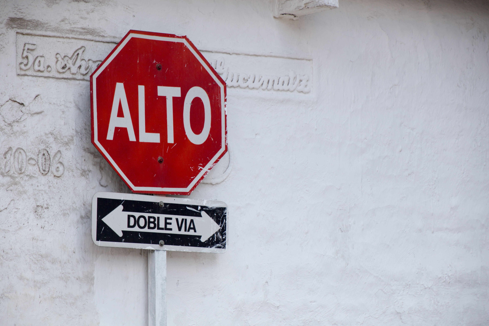

Hypertext Markup Language (HTML) is the standard markup language for creating web pages and web applications.
The list below comes from "1000 formas más frecuentes" (transl. 1000 most frequent word forms)", a list published by the Real Academia Española (RAE) from analysis of more than 160 million word forms found in the Corpus de Referencia del Español Actual (transl. Reference Corpus of Current Spanish), or CREA. CREA is a computerised corpus of texts written in Spanish, and of transcripts of spoken Spanish. It includes books, magazines, and newspapers with a wide variety of content, as well as transcripts of spoken language from radio and television broadcasts and other sources. All the works in the collection are from 1975 to 2004. CREA includes samples from all Spanish-speaking countries. 
The list of "1000 most frequent word forms" comes from an analysis of CREA version 3.2.[2] Plurals, verb conjugations, and other inflections are ranked separately. Homonyms, however, are not distinguished from one another. CREA 3.2 was published in June 2008